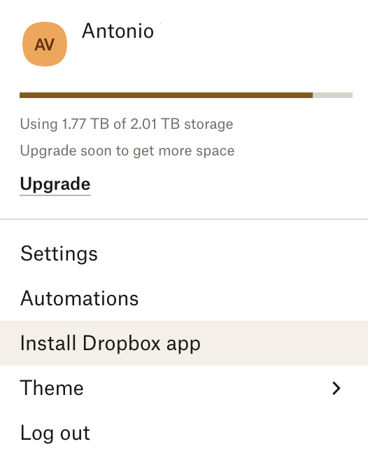
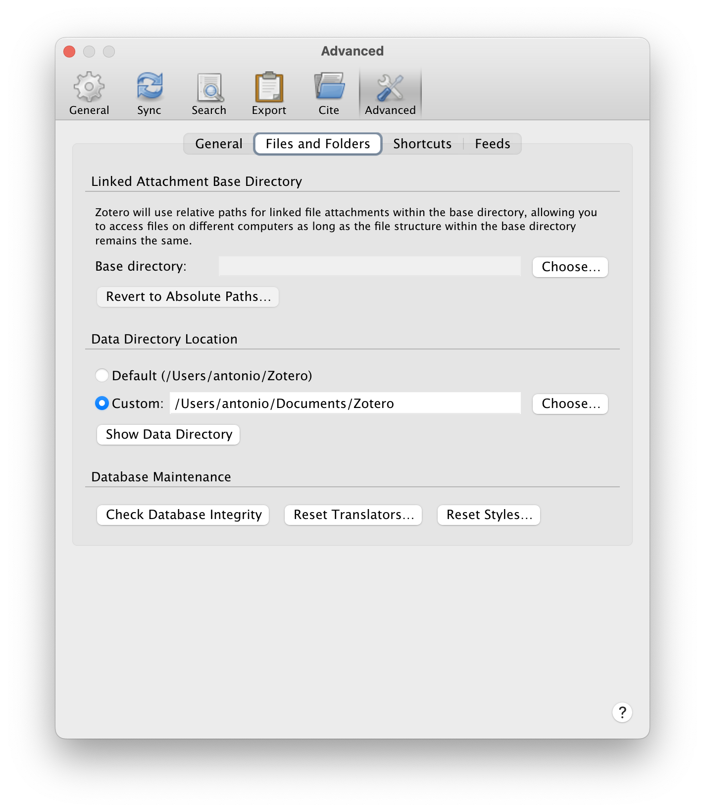
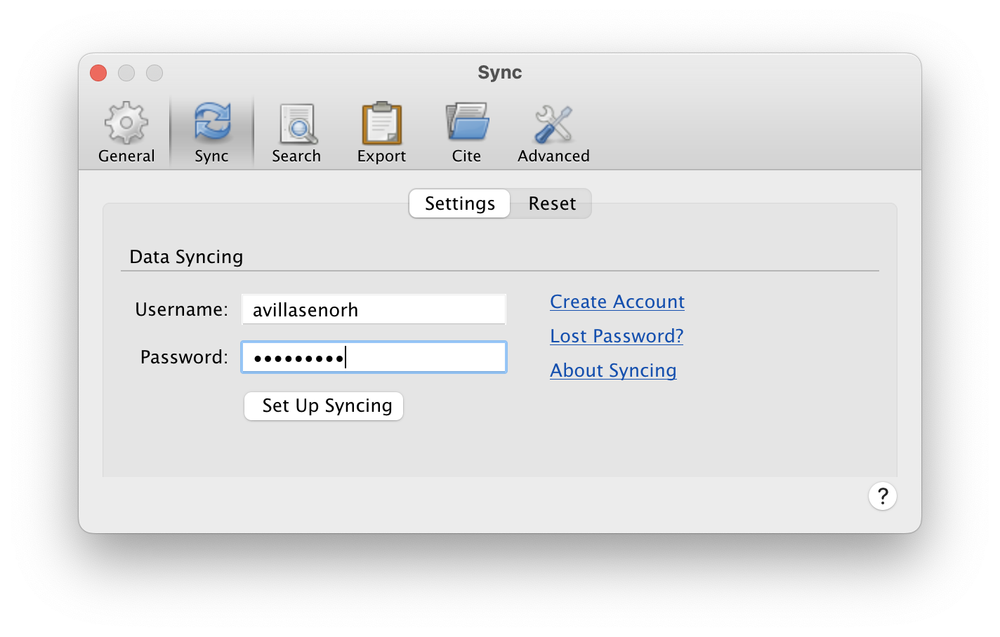
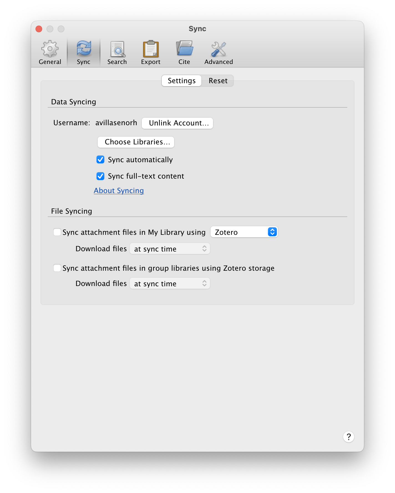

Sonoma installation
Fresh macOS Sonoma installation
1. Inmediately after installation
First check if there are updates for the operating system.
Remove from Dock unwanted applications.
Change setting for macOS and applications
-
Change System settings
- Dock > Position on screen: Left
- Dock > Minimize windows into application icon
- Mouse > Secondary click (Click on right side)
- General > Language & Region > Number format: change decimal character to "."
-
Change Finder settings
-
General > New Finder window show: Desktop
-
Sidebar > Show Hard disks (add HDD to sidebar and hide Hard disks again)
- Sidebar > Do not show CDs, DVDs, and iPods
-
Sidebar > Sidebar: remove not used
-
Advanced > Show all filename extensions
- Advanced > Do not show warning changing extensions
- Advanced > Keep folders on top when sorting by name
-
-
Change Safari settings
- General > uncheck "Open safe files after downloading"
-
Change Textedit settings
- TextEdit > Format > Make Plain Text
-
Remove Floating Thumbnail from Screen Shot:
Cmd + Shift + 5 > Options > Show Floating Thumbnail (uncheck)
Install iTerm2
Dowload and install the iTerm2 app and use it instead of the default terminal
In Settings > Profiles > Colors, change color preset to Novel. (The file Novel.itermcolors
can be found in ~/Dropbox/Software/macOS/macOS_setup/itermcolors)
Set default shell to bash
Because of license issues, in the latest versions of macOS the default shell is zsh instead of bash.
To change the default shell to bash:
$ chsh -s /bin/bash
Initially (before creating/modifying the .bash_profile and .bashrc files)
the $PATH environmental variable is set to:
/usr/local/bin
/System/Cryptexes/App/usr/bin
/usr/bin:/bin:/usr/sbin:/sbin
/var/run/com.apple.security.cryptexd/codex.system/bootstrap/usr/local/bin
/var/run/com.apple.security.cryptexd/codex.system/bootstrap/usr/bin
/var/run/com.apple.security.cryptexd/codex.system/bootstrap/usr/appleinternal/bin
After removing the cryptex directories, the remaining path is:
/usr/local/bin:/usr/bin:/bin:/usr/sbin:/sbin
Because of those license issues, the version of bash provided in /bin/bash
is very old (3.2, from 2007!)
$ echo $BASH_VERSION
3.2.57(1)-release
$ /bin/bash --version
GNU bash, version 3.2.57(1)-release (arm64-apple-darwin23)
Copyright (C) 2007 Free Software Foundation, Inc.
Once you install MacPorts and a few packages, a newer version of bash will be available in
/opt/local/bin/bash:
Configure Mail accounts
Add CSIC, GMail and Yahoo! mail.
Remove iCloud account to avoid confusion.
2. Install development packages
XCode
Go to the App Store and install XCode. Once it is installed, open it and it will install the Command line tools. If the tools are not installed automatically it can be done from the command line:
$ xcode-select --install # agree to license
$ cc --version
Apple clang version 15.0.0 (clang-1500.1.0.2.5)
Target: arm64-apple-darwin23.1.0
Thread model: posix
InstalledDir: /Applications/Xcode.app/Contents/Developer/Toolchains/XcodeDefault.xctoolchain/usr/bin
NOTE: The following may not apply to Sonoma (macOS 14).
After the installation of XCode, the $PATH variable is expanded to:
/usr/local/bin:/usr/bin:/bin:/usr/sbin:/sbin:/Library/Apple/usr/bin
The last folder contains a single command called rvictl that is installed by Xcode.
XQuartz
Then install XQuartz for X Window support.
Logout after the installation of XQuartz and login again for changes to take place.
GCC C/C++ and Fortran compilers
Install gcc and gfortran compilers from the HPC Mac OS X
web page. Download the appropriate .tar.gz file (as of January 2024, the version for Sonoma
M1/M2 Apple silicon was included in the compressed tar file gcc-13.2-m1-bin.tar.gz)
To install it, simply type:
$ sudo tar xvf gcc-13.2-m1-bin.tar -C /.
$ gcc --version
gcc (GCC) 13.2.0
Copyright (C) 2023 Free Software Foundation, Inc.
...
$ gfortran --version
GNU Fortran (GCC) 13.2.0
Copyright (C) 2023 Free Software Foundation, Inc.
...
Setup dotfiles
At this point it is convenient to setup the .bash_profile and .bashrc files.
Initially .bash_profile contains simply:
#
if [ -f ~/.bashrc ]; then
. ~/.bashrc
fi
Important: unlike in Linux, in macOS all the new terminals are login terminals, so they
all run .bash_profile.
Examples of dotfiles can be found in ~/Dropbox/Software/macOS/macOS_setup/dotfiles.
MacPorts
Now we can install the MacPorts package manager. Download the
corresponding pkg file and run the installation.
This adds the following lines to the .bash_profile file:
# MacPorts Installer addition on 2023-12-04_at_19:25:05: adding an appropriate PATH variable for use with MacPorts.
export PATH="/opt/local/bin:/opt/local/sbin:$PATH"
# Finished adapting your PATH environment variable for use with MacPorts.
These lines could be removed from .bash_profile and added to the $PATH declaration in .bashrc.
After installation update MacPorts:
$ sudo port -v selfupdate
$ sudo port upgrade outdated
Normally after a new installation there is nothing to upgrade, but it is advisable to run these two commands periodically.
Now we can use MacPorts to install a more recent version of bash:
$ sudo port install bash
We can now change the default outdated bash to the newer version /opt/local/bin/bash.
To make this new bash the default, add /opt/local/bin/bash to the /etc/shells file:
$ sudo vi /etc/shells
$ cat /etc/shells
# List of acceptable shells for chpass(1).
# Ftpd will not allow users to connect who are not using
# one of these shells.
/bin/bash
/opt/local/bin/bash
/bin/csh
/bin/dash
/bin/ksh
/bin/sh
/bin/tcsh
/bin/zsh
and then:
$ chsh -s /opt/local/bin/bash
To use this shell in shell scripts, replace the common shebang #!/bin/bash for:
#!/usr/bin/env bash
Packages to install with MacPorts:
htoptreewgetcurlcoreutils: GNU versions ofdate,od, ...inetutils:ftp,telnet, ...gva2psImageMagickGraphicsMagickfehopenssh +ssh-copy-idffmepgparallel
Python
See specific section.
Installing the PSF Python adds the following lines to .bash_profile:
# Setting PATH for Python 3.10
# The original version is saved in .bash_profile.pysave
PATH="/Library/Frameworks/Python.framework/Versions/3.10/bin:${PATH}"
export PATH
The resulting $PATH looks like:
/Library/Frameworks/Python.framework/Versions/3.10/bin:/opt/local/bin:/opt/local/sbin:/usr/local/bin:/usr/bin:/bin:/usr/sbin:/sbin:/opt/X11/bin:/Library/Apple/usr/bin
Installing the Anaconda Python distribution adds the following lines to .bash_profile
# >>> conda initialize >>>
# !! Contents within this block are managed by 'conda init' !!
__conda_setup="$('/Users/antonio/opt/anaconda3/bin/conda' 'shell.bash' 'hook' 2> /dev/null)"
if [ $? -eq 0 ]; then
eval "$__conda_setup"
else
if [ -f "/Users/antonio/opt/anaconda3/etc/profile.d/conda.sh" ]; then
. "/Users/antonio/opt/anaconda3/etc/profile.d/conda.sh"
else
export PATH="/Users/antonio/opt/anaconda3/bin:$PATH"
fi
fi
unset __conda_setup
# <<< conda initialize <<<
And sets the $PATH variable to:
/Users/antonio/opt/anaconda3/bin:/Users/antonio/opt/anaconda3/condabin:/Library/Frameworks/Python.framework/Versions/3.10/bin:/opt/local/bin:/opt/local/sbin:/usr/local/bin:/usr/bin:/bin:/usr/sbin:/sbin:/opt/X11/bin:/Library/Apple/usr/bin
However, this initializes the conda base environment for each new shell opened. To prevent this:
$ conda config --set auto_activate_base false
This creates a file .condarc with the following content:
auto_activate_base: false
Now when opening a new shell the conda base environment is not activated, and the
$PATH variable is set to:
/Users/antonio/opt/anaconda3/condabin:/Library/Frameworks/Python.framework/Versions/3.10/bin:/opt/local/bin:/opt/local/sbin:/usr/local/bin:/usr/bin:/bin:/usr/sbin:/sbin:/opt/X11/bin:/Library/Apple/usr/bin
This means that the PSF Python takes preference over the Anaconda Python. To change this, simply activate a conda environment:
$ conda activate # activates the base environment
$ conda activate seismo # activates the "seismo" environment
Git and GitHub
Probably at this point git is already installed by MacPorts. If that is not the case
go to the Git web page and download the installer for macOS.
To configure Git:
$ git config --global user.name "Antonio Villasenor"
$ git config --global user.email "antonio.villasenor@csic.es"
$ git config --global color.ui true
In order to pull and push repositories from your GitHub account in the past it was necessary to set up a private SSH key. Now it is done with personal access tokens that are used as passwords.
Julia
Java
Download a macOS Arm 64 DMG installer of the Java SE (standard edition) Development Kit (JDK). For version 21.0 use the following download page.
IDEs
- VS Code
Virtualization
- Docker
- VirtualBox
- Vagrant
3. Seismological software
SAC
Obtain the SAC distribution from IRIS as a tar file with the codes precompiled for macOS.
As of 2024-01-20 the latest version of SAC is 102.0 provided in the tar file sac-102.0-mac.tar.
$ cd /usr/local
$ sudo tar xvf .../sac-102.0-mac.tar
Then define the following variables in .bashrc
export SACHOME=/usr/local/sac
export SACAUX=$SACHOME/aux
export SACLIB=$SACHOME/lib/sacio.a
export SAC_DISPLAY_COPYRIGHT=0
export SAC_USE_DATABASE=0
export SAC_PPK_LARGE_CROSSHAIRS=1
And finally add $SACHOME/bin to the PATH variable.
SEISAN
Download the latest version from the SEISAN web site. As of 2024-01-20 the latest version of SEISAN is 13.03, but it is not available yet for macOS, so we will install the previous version (12.0 from May 2021).
First create a directory for SEISAN. A typical name would be /seismo.
However the most recent macOS versions do not allow to create a directory directly under the root
directory, so an alternative can be $HOME/seismo.
$ cd
$ mkdir seismo
$ cd seismo
$ tar xvzf .../seisan_v12.0_macosx_64.tar.gz
$ cd COM
$ vi SEISAN.bash
Edit SEISAN.bash and modify the following lines:
export SEISARCH="macosx" # only needed to recompile SEISAN
export SEISAN_TOP="${HOME}/seismo"
Edit .bashrc and add the following lines:
export SEISAN=${HOME}/seismo
source $SEISAN/COM/SEISAN.bash
You can also here add $SEISAN_TOP/PRO and $SEISAN_TOP to the PATH.
In this case you can comment the following lines in SEISAN.bash:
#export PATH="$SEISAN_TOP/PRO:$PATH"
#export PATH="$SEISAN_TOP/COM:$PATH"
This version of SEISAN (12.0) comes precompiled for Macs with Intel processors.
To recompile it for M1/M2 chips you need first to modify the Makefile files in
$SEISAN_TOP/LIB and $SEISAN_TOP/PRO and repace the gcc-11compiler for simply gcc.
In $SEISAN_TOP/LIB:
#cc_macosx = gcc-11 -m64 -c -I../INC -I/usr/X11R6/include $(debug_flags) -o $@
cc_macosx = gcc -m64 -c -I../INC -I/usr/X11R6/include $(debug_flags) -o $@
In $SEISAN_TOP/PRO:
#cc_macosx = gcc-11 -m64 -I../INC $(debug_flags) -o $@
cc_macosx = gcc -m64 -I../INC $(debug_flags) -o $@
After these changes type:
$ cd $SEISAN_TOP/PRO
$ make clean
$ make all
This will recompile the SEISAN library in $SEISAN_TOP/LIB and all the executables
in $SEISAN_TOP/PRO
CPS
To install Bob Herrmann's Computer Programs in Seismology first you need to get a tar
file with the latest version. At the time of this writing the most recent version
was NP330.Oct-26-2023.tgz.
To compile the codes:
$ cd
$ cd src
$ tar xvzf .../NP330.*DATE*.tgz
$ cd PROGRAMS.330
$ ./Setup OSXM # use this option for M1/M2 chips
$ ./C > compile.log 2>&1 &
$ tail -f compile.log
The executables will be located in $HOME/src/PROGRAMS.330/bin. You need to add this
directory to your PATH.
ObsPy
The easiest way to install ObsPy is via Anaconda:
$ conda create -n obspy python=3.11 obspy cartopy pytest pytest-json
$ conda activate obspy
$ (obspy) conda install pytest pytest-json-report # this is necessary to run the tests
$ (obspy) obspy-runtests
Pyrocko
$ conda create -n pyrocko python=3.11
$ conda activate pyrocko
$ (pyrocko) conda install -c pyrocko pyrocko
PhaseNet
$ git clone https://github.com/AI4EPS/PhaseNet.git
$ cd PhaseNet
$ conda env create -f env.yml
$ conda activate phasenet
IRIS/SAGE Software
Compile the library libmseed and associated codes (dataselect, mseed2sac, msi, msmod)
The miniSEED utilities can be installed by compiling the source code in src/mstools
$ cd
$ cd src/mstools
$ mkdir -p ~/bin # if it does not exist
$ mkdir -p ~/man/man1 # if it does not exist
$ ./compile_all.sh > compile.log 2>&1
Newer versions of the codes are also available on GitHub
https://github.com/EarthScope/libmseed
https://github.com/EarthScope/dataselect
https://github.com/EarthScope/msi
https://github.com/EarthScope/msmod
https://github.com/EarthScope/mseed2sac
https://github.com/EarthScope/sac2mseed
https://github.com/EarthScope/evalresp
https://github.com/EarthScope/fdsn-stationxml-convertor
https://github.com/EarthScope/ispaq
evalrespJEvalRespJPlotResprdseedTauP
stationxml-seed-converter
Go to the GitHub repository of the
project, and click in Releases go get the Java jar file with the latest version.
Copy the jar file (e.g. stationxml-seed-converter-2.1.3.jar) in a directory
such as $HOME/bin, and for convenience define the following alias:
alias stationxml-seed-converter='java -cp ~/bin -Xmx512m -jar ~/bin/stationxml-seed-converter-2.1.3.jar --verbose'
Then to run the program:
$ stationxml-seed-converter --input xml_file --output dlsv_file
NonLinLoc
$ git clone https://github.com/alomax/NonLinLoc.git
$ cd NonLinLoc/src
$ /bin/rm -rf bin
$ mkdir bin
$ rm CMakeCache.txt
$ cmake .
$ make > make.log 2>&1
If compilation of sphfd_SWR_NLL fails, comment the following lines in CMakeLists.txt
# --------------------------------------------------------------------------
# sphfd_SWR_NLL
#
#add_executable(sphfd_SWR_NLL sphfd_SWR_NLL.c)
#target_link_libraries(sphfd_SWR_NLL GRID_LIB_OBJS m)
#target_compile_options(sphfd_SWR_NLL PRIVATE "-w")
And recompile:
$ /bin/rm -rf bin
$ mkdir bin
$ rm CMakeCache.txt
$ cmake .
$ make > make.log 2>&1
PASSCAL PASSOFT Software
PASSCAL PASSOFT web page.
List of PASSOFT applications link
Includes dataselect, msi, and rdseed.
Installation:
$ conda create -n passoft3 passoft -c https://onyx.passcal.nmt.edu/passcal -c conda-forge
$ conda update passoft -c https://onyx.passcal.nmt.edu/passcal -c conda-forge
$ conda activate passoft3
$ conda create -n viewer viewer -c https://onyx.passcal.nmt.edu/passcal -c conda-forge
$ conda activate viewer
Seismic Unix
Download the most recent distribution from the Seismic Unix WIKI.
Uncompress the tar file in /usr/local/cwp.
$ cd /usr/local
$ sudo mkdir cwp
$ cd cwp
$ tar xvzf cwp_su_all_4XRXX.tgz
Set the following variable in .bashrc.
export CWPROOT=/usr/local/cwp
Add $CWPROOT/bin to the PATH.
$ cd $CWPROOT/src/configs
$ cp Makefile.config_macos ../Makefile.config
$ cd ..
$ make install
$ make xtinstall
Additional items (not essential for running most of SU)
$ make xminstall # for FFTLAB, a fun educational app for exploring the Fourier Transform
$ make mglinstall # Open GL applications, Graphics codes that could be built upon.
$ make finstall # Fortran codes, modeling and anisotropy codes.
$ make sfinstall # SFIO installation for segdread (the SEGD to SU data reader)
Educational
- jAmaSeis link
4. Geoscience software
GMT
GMT6 can be installed with MacPorts:
$ sudo port install gdal +hdf5 +netcdf +openjpeg
$ sudo port install gmt6 [+fftw3]
$ sudo port install graphicsmagick ffmpeg # if not installed previously
GMT is installed in /opt/local/lib/gmt6/bin. To use GMT in command line or scripts you
need to add this directory to your PATH.
GIS
- QGIS
- Grass
Paraview
GPlates
5. Other software
Rosetta 2
Rosetta 2 enables a Mac with Apple silicon to use apps built for a Mac with an Intel processor [link]. Rosetta 2 is automatically installed the first time that we try to use an app that was built only for Mac computers with an Intel processor.
Dropbox
First login to your Dropbox account and click on Install Dropbox app to download the installer.

Run the installer and select the folders that you want to synchronize.
These folders will be created under the directory $HOME/Dropbox
Make soft links to the folders that you want to access in your $HOME directory:
$ cd
$ ln -s ~/Dropbox/Projects
$ ln -s ~/Dropbox/src
$ ln -s ~/Dropbox/scripts
$ ln -s ~/Dropbox/data
Finally remove the original Documents folder from the Finder sidebar
and add replace it with ~/Dropbox/Documents. Also add to the sidebar commonly
used folders such as ~/Dropbox/Projects, etc.
Zotero
Download the appropriate installer from the Zotero web page.
By default, Zotero stores its files in $HOME/Zotero. If you want to change this location
to for example $HOME/Documents/Zotero, go to Preferences > Advanced > Files and Folders
and change the directory where the Zotero files are stored:

To synchronize your Zotero library between computers, you need to create a Zotero account and enable syncing. Go to Preferences > Sync and enter username and password of your Zotero account and click on Set Up Syncing.

After that some additional options will appear. Uncheck the two boxes in the File Syncing section.

The synchronization of a large PDF collection requires a paid Zotero subscription. However, the synchronization can be done with other shared folders such as Dropbox.
In your first installation of Zotero, store the PDFs in a shared Dropbox location instead of the Zotero folder:
- Quit Dropbox
- Go to local Zotero directory (e.g.
$HOME/Documents/Zotero) - Copy the
storagefolder to$HOME/Dropbox/Zotero/storage - Rename directory
storagetostorage_old - Make a soft link of Dropox storage directory
$HOME/Dropbox/Zotero/storageto the current directory - Restart Zotero
The commands to enter in the terminal are:
$ cd
$ mkdir -p ~/Dropbox/Zotero
$ cd Documents/Zotero
$ cp -r storage ~/Dropbox/Zotero/.
$ mv storage storage_old
$ ln -s ~/Dropbox/Zotero/storage
If you already have a shared Zotero Dropbox folder, you can access it and synchronize it from other computers.
- Install Zotero and optionally change the Zotero folder to
$HOME/Documents/Zotero - Login to your Zotero account, uncheck the File Syncing options and wait for the synchronization of all papers (this synchronizes only the metadata, not the PDFs)
- Quit Zotero
- Go to local Zotero directory (e.g.
$HOME/Documents/Zotero) - Rename directory
storagetostorage_old - Make a soft link of Dropox storage directory
$HOME/Dropbox/Zotero/storageto the current directory - Restart Zotero
The commands to enter in the terminal are:
$ cd
$ cd Documents/Zotero
$ mv storage storage_old
$ ln -s ~/Dropbox/Zotero/storage
Microsoft Office
Log in to Microsoft 365 account to download installer.
Remove unwanted applications (e.g. Outlook, OneNote) just after installation.
MacTeX and TeXstudio
To install LaTeX in a Mac, the best alternative is to install the MacTeX
distribution. Download and run the pkg installer (it is a large download).
Once you have installed MacTeX you can also install the TeXstudio
integrated writing environment for creating LaTeX documents. Download the dmg installer,
open it and copy the app to the Applications folder.
Miscellaneous
The following apps can be installed from the App Store:
- The Unarchiver: open compressed files
- Pocket: save web articles to read later
- Simple Comic: comic reader for
cbzandcbrformats
The following apps can be installed by downloading the installer from the developer's web page:
- Adobe Acrobat Reader: for reading and digitally sign PDF documents
- Brave: web browser
- Firefox: web browser
- Tor: web browser
- DjView: visualize scanned documents in
djvuformat (link) - Google Earth Pro: map and satellite imagery viewer (download)
- Spotify: listen to music and podcasts
- qBittorrent: download torrent files
- VLC: video and music player
-
zoom: video conference tool
-
CorelDRAD
- FortiClient
- OpenVPN
-
Google Docs, Sheets, Slides: simply open browser
-
AutoFirma